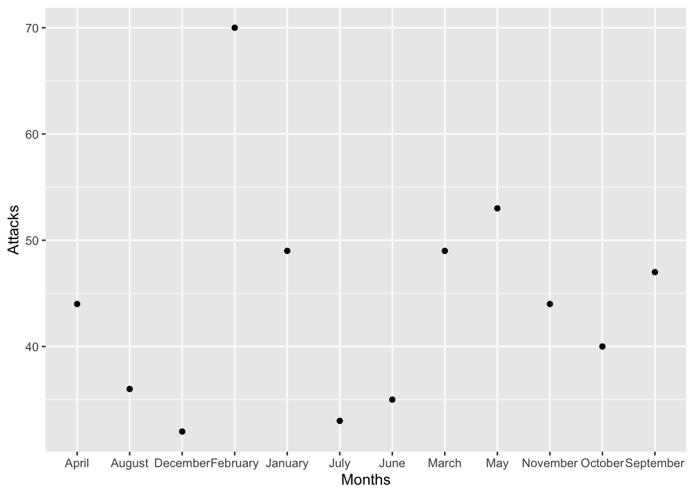
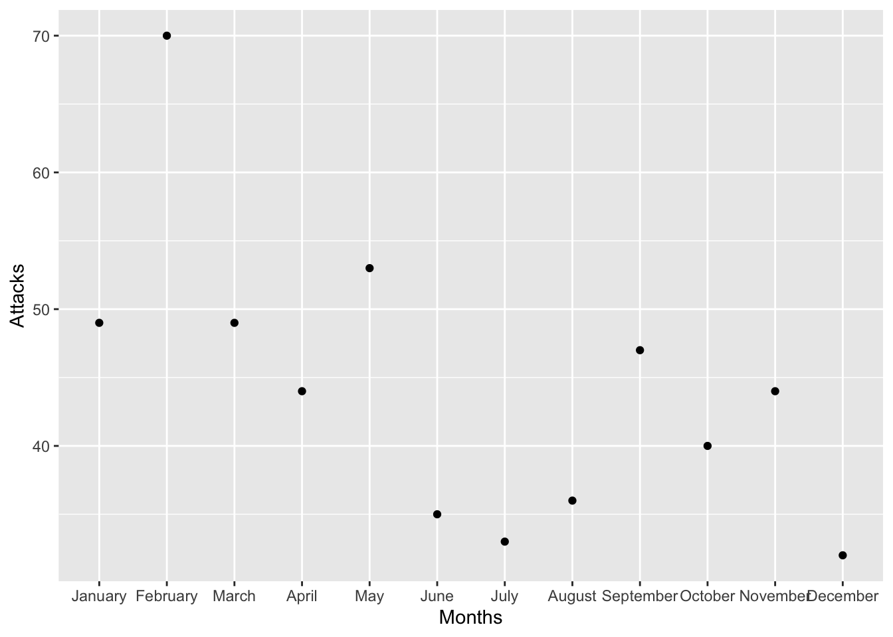
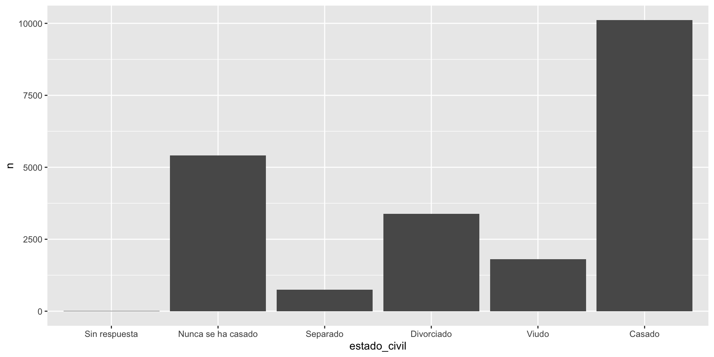
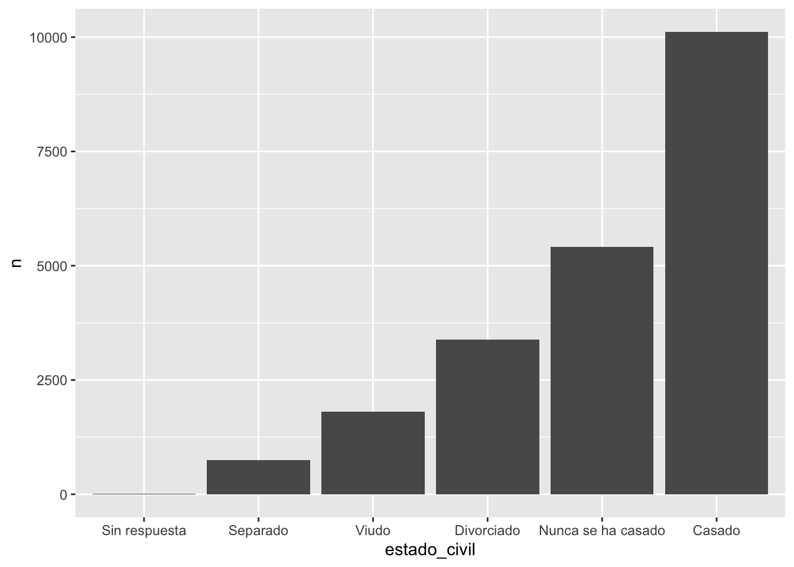
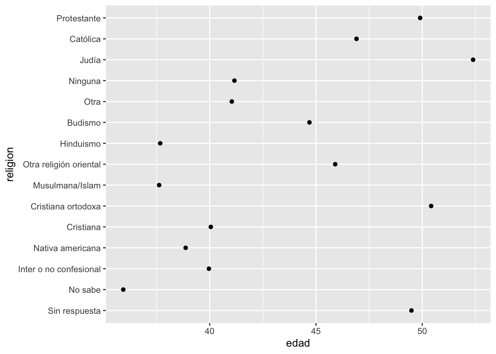
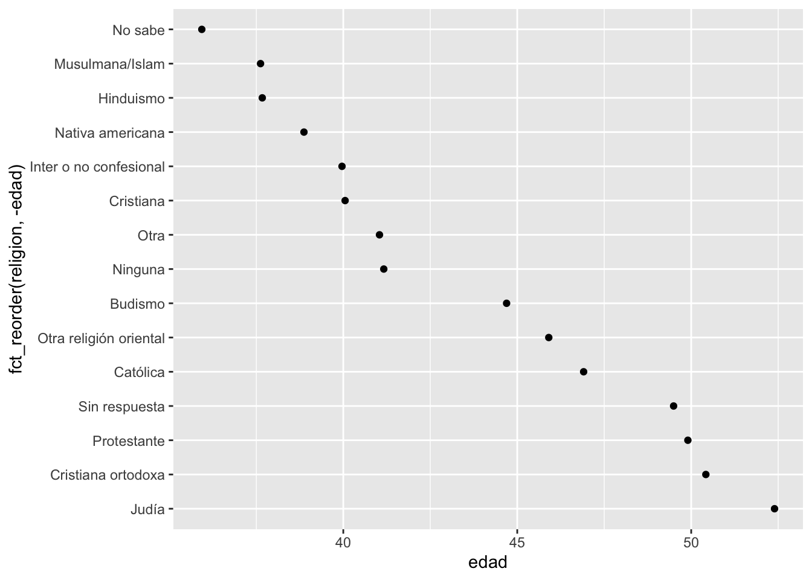

Capítulo20 Factores
Fecha de la ultima revisión
## [1] "2024-10-22"El tema proviene de los siguientes sitios. Aunque los ejemplos son distinctos
English: https://r4ds.had.co.nz/factors.html
Español: https://es.r4ds.hadley.nz/15-factors.html
## [1] "December" "January" "March" "April"## chr [1:4] "December" "January" "March" "April"## int [1:4] 1 2 3 4Unir las dos listas
## month valores x
## 1 December 7 1
## 2 January 3 2
## 3 March 2 3
## 4 April 10 420.1 ¿Qué ocurrio en el gráfico?

Order months in correct order
use month.name
Hay variables ya descrita en R, para facilitar el uso de constantes
- LETTERS: Mayuscula
- letters: minuscula
- month.abb: abreviación de meses en Ingles
- month.name: nombre de meses en Ingles
- pi = el valor de pi
See this website for more details
https://datacornering.com/how-to-get-the-month-name-from-the-number-in-r/
## [1] "A" "B" "C" "D" "E" "F" "G" "H" "I" "J" "K" "L" "M" "N" "O" "P" "Q" "R" "S"
## [20] "T" "U" "V" "W" "X" "Y" "Z"## [1] "a" "b" "c" "d" "e" "f" "g" "h" "i" "j" "k" "l" "m" "n" "o" "p" "q" "r" "s"
## [20] "t" "u" "v" "w" "x" "y" "z"## [1] "Jan" "Feb" "Mar" "Apr" "May" "Jun" "Jul" "Aug" "Sep" "Oct" "Nov" "Dec"## [1] "January" "February" "March" "April" "May" "June"
## [7] "July" "August" "September" "October" "November" "December"## [1] 3.141593df <- data.frame(Months=c("January", "February", "March", "April", "May", "June", "July", "August", "September", "October", "November","December"),
Attacks=c(49, 70, 49, 44, 53, 35, 33, 36, 47, 40, 44, 32))
ggplot(df, aes(Months, Attacks))+
geom_point()### validar el supuesto que tengo información escrita correctamente para cada mes de año en el dataframe
all(df$Months %in% month.name)## [1] TRUE### convert to a factor, order defined by `month.name`.
df$Months <- factor(df$Months, levels=month.name)
ggplot(data=df, aes(x=Months, y=Attacks)) +
geom_point()
20.1.1 Usando la funciones factor y levels, estamos asignando los factores a un nivel específico en el orden de la lista
20.1.2 parse_factor() is similar a factor(), but generates a warning if levels have been specified and some elements of x are not found in those levels.
x1= c("Dic", "Ene", "Mar", "Dii") # Nota que esta lista tengo un mes que se llama "Dii"
niveles_meses=c("Ene", "Mar", "Dic")
y1 <-factor(x1, levels = niveles_meses)
y1## [1] Dic Ene Mar <NA>
## Levels: Ene Mar Dic## [1] Dic Ene Mar <NA>
## attr(,"problems")
## # A tibble: 1 × 4
## row col expected actual
## <int> <int> <chr> <chr>
## 1 4 NA value in level set Dii
## Levels: Ene Mar DicSi quiere que los valores aparezca en el orden que aparecen en la base de datos use unique(variable)
df_est=data.frame(Nombre_est=c("Monica", "Isabela", "Juan", "Robo", "Pepito"),
Nota_Final=c(99, 27, 89, 91, 27))
df_est## Nombre_est Nota_Final
## 1 Monica 99
## 2 Isabela 27
## 3 Juan 89
## 4 Robo 91
## 5 Pepito 27
df_est$fct1=factor(df_est$Nombre_est, levels = unique(df_est$Nombre_est))
ggplot(df_est, aes(fct1, Nota_Final))+
geom_point()
## [1] Dic Ene Mar Dii
## Levels: Dic Ene Mar Dii## [1] "Dic" "Ene" "Mar" "Dii"20.2 Temas:
library(forcats)
sort()
factor()
parse_factor()
unique()
fact_inorder()
levels()
20.2.1 Datos : Encuesta Social General
- count()
- Ejercicios:
## # A tibble: 21,483 × 9
## anio estado_civil edad raza ingreso partido religion denominacion horas_tv
## <int> <fct> <int> <fct> <fct> <fct> <fct> <fct> <int>
## 1 2000 Nunca se ha… 26 Blan… 8000 -… Ind, p… Protest… Bautistas d… 12
## 2 2000 Divorciado 48 Blan… 8000 -… No fue… Protest… Bautista, n… NA
## 3 2000 Viudo 67 Blan… No apl… Indepe… Protest… No denomina… 2
## 4 2000 Nunca se ha… 39 Blan… No apl… Ind, p… Cristia… No aplica 4
## 5 2000 Divorciado 25 Blan… No apl… No fue… Ninguna No aplica 1
## 6 2000 Casado 25 Blan… 20000 … Fuerte… Protest… Bautistas d… NA
## 7 2000 Nunca se ha… 36 Blan… 25000 … No fue… Cristia… No aplica 3
## 8 2000 Divorciado 44 Blan… 7000 -… Ind, p… Protest… Sínodo lute… NA
## 9 2000 Casado 44 Blan… 25000 … No fue… Protest… Otra 0
## 10 2000 Casado 47 Blan… 25000 … Fuerte… Protest… Bautistas d… 3
## # ℹ 21,473 more rowsContabilizar la cantidad de persona por “estado civil”
## # A tibble: 6 × 2
## estado_civil n
## <fct> <int>
## 1 Sin respuesta 17
## 2 Nunca se ha casado 5416
## 3 Separado 743
## 4 Divorciado 3383
## 5 Viudo 1807
## 6 Casado 10117knitr
## [1] Sin respuesta Nunca se ha casado Separado Divorciado
## [5] Viudo Casado
## 6 Levels: Sin respuesta Nunca se ha casado Separado Divorciado ... Casadodf$estado_est_civil <-factor(df$estado_civil, levels = df$estado_civil)
df$niveles_est_civil <- fct_reorder(df$estado_civil, df$n )
df## # A tibble: 6 × 4
## estado_civil n estado_est_civil niveles_est_civil
## <fct> <int> <fct> <fct>
## 1 Sin respuesta 17 Sin respuesta Sin respuesta
## 2 Nunca se ha casado 5416 Nunca se ha casado Nunca se ha casado
## 3 Separado 743 Separado Separado
## 4 Divorciado 3383 Divorciado Divorciado
## 5 Viudo 1807 Viudo Viudo
## 6 Casado 10117 Casado Casado
20.3 A smaller figure to the right, with floating text

LOTS of text here to wrap around the figure. dfghjlkjhgdgxchvbvcxcvbnnbvvbvbbvcvxcv. fgffhgcvbcvbhbvvbvcvbnv bcbnbbnmmbnmnb vbcbnbvvnbbb vbb v b b cgjhkggbcv
20.4 Haga un re-order por la cantidad de personas por religion
df2=encuesta %>%
count(religion)
df2 %>%
mutate(religion = fct_reorder(religion, n)) %>%
ggplot(aes(x = religion, y = n)) +
geom_col()+
theme(axis.text.x = element_text(angle = 45, vjust = 0.5, hjust=1))
Hacer los ejercicios en la sección 15.3.1 del libro en español
20.5 Modificar el orden de los factores
- fct_reorder()
- !is.na( ) remover los “NA”
- fct_infreq()
- fct_rev()
- fct_recode()
- fct_collapse()
- fct_lump()
#model=lm(y~x, df)
#summary(model)
resumen_religion <- encuesta %>%
group_by(religion) %>%
summarise(
edad = mean(edad, na.rm = TRUE),
horas_tv = mean(horas_tv, na.rm = TRUE),
sd_edad = min(horas_tv, na.rm = TRUE),
n = n()
)
resumen_religion## # A tibble: 15 × 5
## religion edad horas_tv sd_edad n
## <fct> <dbl> <dbl> <dbl> <int>
## 1 Sin respuesta 49.5 2.72 2.72 93
## 2 No sabe 35.9 4.62 4.62 15
## 3 Inter o no confesional 40.0 2.87 2.87 109
## 4 Nativa americana 38.9 3.46 3.46 23
## 5 Cristiana 40.1 2.79 2.79 689
## 6 Cristiana ortodoxa 50.4 2.42 2.42 95
## 7 Musulmana/Islam 37.6 2.44 2.44 104
## 8 Otra religión oriental 45.9 1.67 1.67 32
## 9 Hinduismo 37.7 1.89 1.89 71
## 10 Budismo 44.7 2.38 2.38 147
## 11 Otra 41.0 2.73 2.73 224
## 12 Ninguna 41.2 2.71 2.71 3523
## 13 Judía 52.4 2.52 2.52 388
## 14 Católica 46.9 2.96 2.96 5124
## 15 Protestante 49.9 3.15 3.15 10846
## [1] 020.5.1 Nota el efecto de añadir un “-” antes de edad

resumen_religion %>%
mutate(religion = fct_reorder(religion, horas_tv)) %>%
ggplot(aes(horas_tv, religion)) +
geom_point()
Reorder factor levels by sorting along another variable Description fct_reorder() is useful for 1d displays where the factor is mapped to position; fct_reorder2() for 2d displays where the factor is mapped to a non-position aesthetic. last2() and first2() are helpers for fct_reorder2(); last2() finds the last value of y when sorted by x; first2() finds the first value.
resumen_ingreso <- encuesta %>%
group_by(ingreso) %>%
summarise(
edad = mean(edad, na.rm = TRUE),
horas_tv = mean(horas_tv, na.rm = TRUE),
n = n()
)
resumen_ingreso## # A tibble: 16 × 4
## ingreso edad horas_tv n
## <fct> <dbl> <dbl> <int>
## 1 Sin respuesta 45.5 2.90 183
## 2 No sabe 45.6 3.41 267
## 3 Se niega a responder 47.6 2.48 975
## 4 25000 o más 44.2 2.23 7363
## 5 20000 - 24999 41.5 2.78 1283
## 6 15000 - 19999 40.0 2.91 1048
## 7 10000 - 14999 41.1 3.02 1168
## 8 8000 - 9999 41.1 3.15 340
## 9 7000 - 7999 38.2 2.65 188
## 10 6000 - 6999 40.3 3.17 215
## 11 5000 - 5999 37.8 3.16 227
## 12 4000 - 4999 38.9 3.15 226
## 13 3000 - 3999 37.8 3.31 276
## 14 1000 - 2999 34.5 3.00 395
## 15 Menos de 1000 40.5 3.36 286
## 16 No aplica 56.1 3.79 7043
Reorder factor levels by hand Description This is a generalisation of stats::relevel() that allows you to move any number of levels to any location.

- Ejercicios:
Hacer los ejercicios en la sección 15.5.1 del libro en español